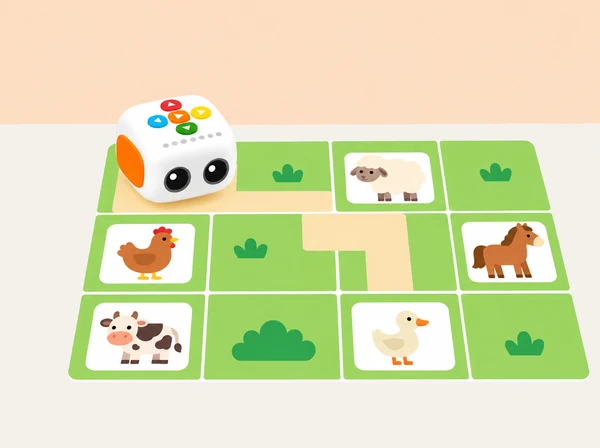
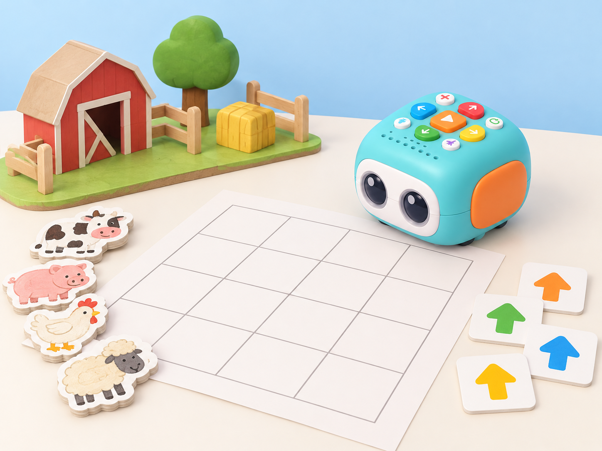
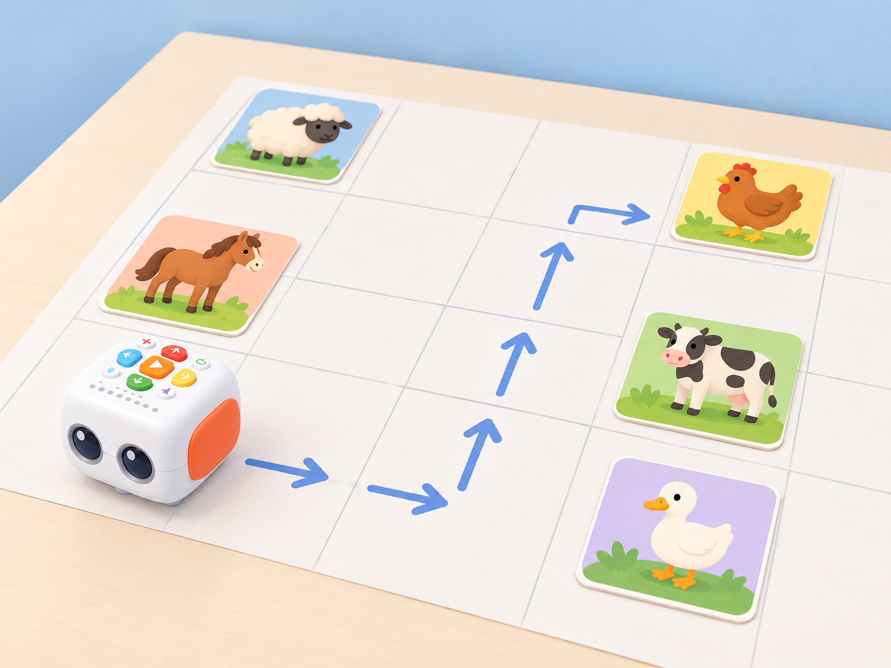

El rastre del corral
🏷️ Animals i entorn
🌱 Situació, repte i intenció
🎯 Aprenentatges i vocabulari
- Orientar-se en una graella amb files, columnes i un punt inicial acordat.
- Programar rutes a cinc destinacions amb ordres cap avant que es puguen comptar.
- Comparar predicció i trajecte i corregir una instrucció concreta quan no coincideixen.
- Explicar les decisions amb un mapa de paper sense atribuir al robot la capacitat d’identificar animals.
🧰 Materials i preparació
Comproveu la distància de moviment en el Tale-Bot disponible: el valor predeterminat és d’uns 10 cm i alguns models permeten configurar 15 cm. Consulteu Primeres passes amb Tale-Bot Pro abans de definir la graella. Per a practicar només ordres cap avant, poseu les metes en el corredor davant del robot i reorienteu-lo en reiniciar cada repte.
📅 Seqüència didàctica
Dissenyem i llegim el mapa
Fase 1 · Activem i prediem
Exploreu què representa el mapa i predigueu com es pot indicar una destinació sense tapar les caselles.
Fase 2 · Explorem i construïm
Observeu què indiquen les targetes de fletxes i com es poden moure les fitxes adhesives sense cobrir el recorregut.
Fase 3 · Expliquem i registrem
Marqueu files i columnes amb lletres, nombres o un altre codi visual. Practiqueu descriure una posició i compteu les caselles.
Fase 4 · Apliquem i millorem
Col·loqueu cinc animals i una marca d’inici orientada. Si trieu fauna valenciana, contrasteu els noms amb una font local fiable. Torneu a col·locar el mapa igual després de cada ronda.

Fase 5 · Comprovem i reflexionem
Programem cinc arribades
Fase 1 · Activem i prediem
Una persona tria un animal i l’equip localitza la destinació al mapa.
Fase 2 · Explorem i construïm
Compteu les caselles entre inici i meta i col·loqueu les targetes «avant» en l’ordre previst.
Fase 3 · Expliquem i registrem
Verbalitzeu la predicció. Abans de prémer Play, compteu els indicadors lluminosos i comproveu que n’hi ha un per cada ordre.
Fase 4 · Apliquem i millorem
Executeu la ruta, recolliu un marcador en arribar i repetiu amb els altres quatre animals, reiniciant des de la marca orientada. Si Tale-Bot no arriba, compareu la posició final amb la predicció abans de canviar el programa.

Fase 5 · Comprovem i reflexionem
Comparem, depurem i expliquem
Fase 1 · Activem i prediem
Ordeneu les cinc rutes de la que necessita menys ordres a la que en necessita més i predigueu quina serà més llarga.
Fase 2 · Explorem i construïm
Poseu els recomptes costat per costat i comproveu que tots parteixen de la mateixa casella, orientació i destinació. Marqueu en el mapa els trams rectes i els girs: dues rutes poden tindre el mateix nombre d’ordres i longitud diferent, o a l’inrevés. Si hi ha desacord, reconstruïu una ruta amb una fitxa abans de tornar a programar Tale-Bot. Registreu també si la diferència prové del recorregut o de com s’ha comptat una ordre.
Fase 3 · Expliquem i registrem
Trieu una ruta que haja acabat abans o després de la fita. Comproveu recompte, mida de la quadrícula, orientació i indicadors; anoteu on va deixar de coincidir amb la predicció.
Fase 4 · Apliquem i millorem
Corregiu una sola cosa i repetiu des del mateix punt. Expliqueu quina ruta era més llarga o més curta i quin indici ha ajudat a trobar l’error.
Fase 5 · Comprovem i reflexionem
Conducció de les sessions
La pàgina pública de Matatalab descriu l’objectiu de preparar un mapa propi i completar-hi una tasca amb ordres cap avant, però no mostra al text consultable la durada ni el detall del flux docent. Aquesta adaptació distribueix el repte propi en tres trobades per poder construir el mapa, fer cinc intents amb calma i revisar els errors; aquesta temporalització no s’atribueix al fabricant.
La pàgina enumera un PDF i una presentació adjunts, però el seu contingut no s’ha pogut llegir en aquesta auditoria.
En la primera trobada, modeleu només una ruta, amb l'inici i l'orientació assenyalats. En la segona, doneu temps per a les cinc metes: abans de cada prova, l'equip anuncia files/columnes, recompte de caselles i nombre d'ordres; després, un company verifica els indicadors de codificació del robot. En la tercera, compareu les seqüències en una tira comuna i trieu-ne una per depurar. No reprogramar la ruta sencera quan una ordre falla ajuda a mantindre el focus en el pas que cal revisar.
El pas de 10 cm és la configuració predeterminada descrita al manual; la targeta de configuració permet una opció de 15 cm en el model corresponent. Per tant, la quadrícula local ha d'usar la mesura activa al robot concret. Si una casella no coincideix exactament, marqueu el mapa com a model aproximat i feu una prova d'alineament abans de col·locar les metes.
🧪 Evidències i avaluació
Observeu si cada infant pot reconèixer files i columnes, descriure una casella o coordenada, orientar el robot, comptar caselles, traduir el recompte en ordres cap avant, comparar l’extensió de programes i usar els indicadors com a comprovació visual. Arxiveu el mapa, la seqüència, la predicció, el resultat i la revisió d’un error. Valoreu que l’alumnat puga explicar com ha sabut quina ordre canviar, no la velocitat.
♿ Participació, accessibilitat i seguretat
Reduïu la graella a poques caselles, marqueu el nord del recorregut o oferiu fletxes amb relleu. Es pot assenyalar la destinació, dictar el programa, moure una fitxa que represente Tale-Bot o observar i registrar-ne el recorregut.
🔗 Referents i adaptació
Adapta la segona lliçó del primer nivell de Tale-Bot Pro, «On són els animals de la granja?». La pàgina pública fixa l’objectiu d’inventar una tasca en un mapa i resoldre-la amb ordres cap avant; també enumera robot, mapa en blanc, targetes de comandament, adhesius i full d’activitat. La fitxa pròpia amplia aquest punt de partida amb files i columnes, inici orientat, cinc metes d’animals, comprovació dels indicadors i comparació de rutes.
Són decisions de disseny local, no detalls que atribuïm al PDF o a la presentació adjunts, perquè no s’han pogut consultar. No reutilitza els seus materials gràfics.